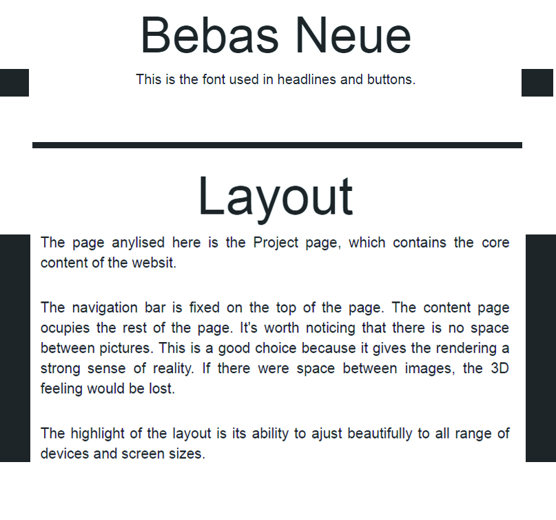

DESIGN PRINCIPLE
1
Gradient Background
When the page is long, a gradient background is used to indicate the position the user is at. When the user get used to it, they gain a subtal sense of the length of the page and the portion of the contents left.
2
Text Align Style
When text in paragraphs is short, it is center aligned. It follows the headline closely to form a block together with it. When text is long enough to ocupy enough space, it is justify aligned to form a block alone, which is closer in style with a picture.
3
Columns
When infromation is rich, using Columns to seperate different type of information to improve readability as in this page and the design page. And put more information in the same row as shown in the technology page.